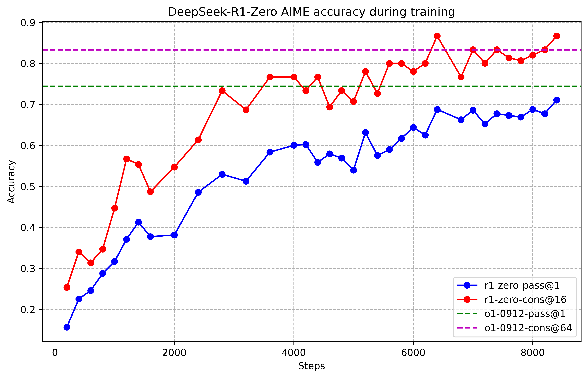

第 30 章 · 知识蒸馏与推理小模型
前沿大模型的高昂推理成本与硬件门槛，使得大模型推理能力能否有效蒸馏转移至轻量小模型成为工业界与学术界的核心焦点。DeepSeek-R1 蒸馏模型家族（从 1.5B、7B 到 70B）以惊艳的性能表现彻底颠覆了“小模型无法驾驭深度推理”的传统认知。本章系统解构白盒 Logits 蒸馏与黑盒序列级长思维链数据蒸馏的数学机理，深度剖析高质量蒸馏数据集的合成与多维清洗过滤流水线，辨析小模型推理的泛化性与记忆力边界，并提供基于 TRL 与多卡分布式长序列微调的完整工程实战代码与超参数基线。
1. 推理能力的蒸馏悖论：大模型推理能否转嫁小模型？
在大语言模型进化历程中，深度推理能力（Reasoning Capability）长期被视作大参数量模型的“涌现特权”（Emergent Ability）。传统的认知范式认为，模型只有在参数规模跨越数十亿甚至上百亿门槛后，其注意力层与多层感知机（MLP）才能构建出足以支撑复杂逻辑规划的高维几何流形；参数量在 1.5B 至 7B 级别的端侧或边缘模型，往往被局限在轻量分类、事实检索或单轮语法润色任务上。
1.1 R1 蒸馏模型的工业震撼与能力重塑
2025 年初，DeepSeek 团队开源了 DeepSeek-R1-Distill 系列模型（基于 Qwen-2.5 与 Llama-3 架构，覆盖 1.5B、7B、8B、14B、32B 和 70B 等尺寸）。在国际数学奥林匹克资格赛 AIME 2024 与高难度数学基准 MATH-500 上，DeepSeek-R1-Distill-Qwen-32B 达到了惊人的 72.6% AIME 准确率，甚至超越了未经长思考链微调的原始 671B 基础大模型；即便是仅有 1.5B 参数的极端轻量模型，在经过优质长思维链蒸馏后，MATH 基准也突破了 80% 的大关，展现出令人震惊的逻辑连贯性与自我修正迹象。

这一突破引发了深度学习社区对“推理能力本质”的广泛反思：小模型在长 CoT 下展现出的解题能力，究竟是真正掌握了抽象逻辑泛化算子，还是仅仅在海量模式匹配中拟合了教师模型的思考链表层语法风格？
1.2 直接小模型强化学习 vs 蒸馏微调
在 DeepSeek-R1 论文中，作者明确披露了一个关键消融实验：如果直接在 7B 或 14B 等小参数基础模型上，套用 R1-Zero 的纯强化学习（Pure RL without Cold-Start）流程，小模型很难自发涌现出高级的自我反思与长思维链演化。这是因为小模型在预训练阶段沉淀的语义网络较为浅显，在未施加任何先验引导时，策略网络在庞大的离散 Token 搜索空间中如同盲人摸象，极易陷入输出混乱标点、死循环重复或语法破碎的局部死锁，探索熵过大导致有效梯度信号极其稀疏。
相反，利用超大模型（671B）探索生成的 80 万条精滤长思考轨迹作为蒸馏语料，对小模型进行标准的有监督微调（SFT），其收敛速度和最终性能均以数量级优势超越直接在小模型上进行纯 RL 探索。蒸馏让小模型“站在巨人的肩膀上”，直接习得了高阶思考的结构范式（如“假设验证”、“分类讨论”、“反证检验”）。
从优化动态来看，长序列 SFT 本质上是在为小模型重塑“条件前向生成轨迹的几何流形”。在未经微调前，小模型的自回归采样在展开到第 5 步时就会因为积累的概率漂移而滑出可行流形；而高质量蒸馏数据充斥着“在偏离正轨时如何通过反思转折词将注意力拉回”的示范。小模型通过最大似然估计（MLE）在参数层牢固刻画了这一恢复行为，从而在宏观上展现出极强的推理韧性。
2. 两类蒸馏技术：白盒 Logits 蒸馏 vs 黑盒序列级数据蒸馏
在模型压缩与知识迁移理论中，蒸馏方法主要划分为两大技术流派：以 Hinton 经典框架为代表的白盒概率分布（Logits）蒸馏，以及现代大语言模型广泛采用的黑盒序列级数据蒸馏（Sequence-level Knowledge Distillation）。
| 对比维度 | 白盒 Logits 蒸馏（White-box Distillation） | 黑盒序列级数据蒸馏（Sequence-level Distillation） |
|---|---|---|
| 技术前提 | 必须完全访问教师模型的内部前向 Logits 与词表 | 仅需获取教师模型生成的文本响应（API 即可满足） |
| 词表一致性要求 | 极其严格：学生与教师的 Tokenizer 必须完全同构 | 完全解耦：教师（如 DeepSeek）与学生（如 Llama）词表可完全不同 |
| 算力与通信开销 | 极大：必须在训练时同步运行双模型或落盘庞大的概率分布张量 | 轻量：只需离线存储清洗后的文本，学生端按标准 SFT 流水线微调 |
| 长序列扩展性 | 在 16K/32K 超长思考链下，概率张量传输导致通信带宽瘫痪 | 完美适配长上下文，数据压缩比高，支持大规模并行微调 |
| 工业落地主流 | 学术界特定小规模实验，在超大模型场景下逐渐被边缘化 | 工业界构建推理小模型绝对事实标准（DeepSeek-R1 Distill 核心） |
2.1 白盒 Logits 蒸馏的数学建模与长序列瓶颈
白盒蒸馏通过最小化学生策略网络 \( \pi_\theta \) 与教师策略网络 \( \pi_{\mathrm{teacher}} \) 输出的类别概率分布之间的 Kullback-Leibler（KL）散度：
\[ \mathcal{L}_{\mathrm{logits}}(\theta) = (1 - \alpha) \mathcal{L}_{\mathrm{CE}}(y, \pi_\theta(x)) + \alpha \tau^2 D_{\mathrm{KL}}\left( \sigma\left(\frac{\mathbf{z}_{\mathrm{teacher}}(x)}{\tau}\right) \;\Big\|\; \sigma\left(\frac{\mathbf{z}_\theta(x)}{\tau}\right) \right) \]其中 \( \tau \) 为温度超参数，\( \sigma \) 为 Softmax 函数。在短文本分类或机器翻译中，软标签（Soft Targets）能够传递“负标签之间的暗知识”（Dark Knowledge，例如模型认为猫和狗更像，而与飞机截然不同）。然而，在现代长思维链推理场景下，词表规模普遍达到 128,000 至 150,000。若一条长推理链展开至 16,384 个 Token，单个样本的单精度 Logits 张量体积高达：
\[ 16384 \times 150000 \times 4 \text{ Bytes} \approx 9.83 \text{ GB} \]一个仅包含 10 万个样本的数据集，离线存储 Logits 就需要近 1 PB 的海量高速存储空间。更致命的是，若教师模型（如 671B MoE）与学生模型（如 7B 稠密）由不同的分词器驱动，二者的 Token 边界与嵌入空间根本无法对齐，使得白盒 Logits 蒸馏在现代推理大模型工程中完全失去可行性。
2.2 序列级长思维链蒸馏（Sequence-level CoT Distillation）
Kim & Rush（2016）奠定的序列级知识蒸馏在长推理模型时代展现出无与伦比的优雅与强悍。其形式化目标为：直接将教师模型针对提示词 \( x \) 自回归采样生成的长思维链解答作为伪真实标签（Pseudo Ground Truth），学生模型仅仅在有监督微调（SFT）目标下最小化负对数似然：
\[ \mathcal{L}_{\mathrm{seq}}(\theta) = -\sum_{t=1}^{|y_{\mathrm{teacher}}|} \log \pi_\theta(y_{t, \mathrm{teacher}} \mid x, y_{3. 蒸馏数据的工业级构造、清洗与过滤流水线
在长思维链蒸馏中，数据的质量与可解释性远比数量更为致命。直接把未经清洗的大模型原始输出灌给小模型，小模型不仅无法学会正确的推演，反而会全盘继承教师模型的冗余幻觉、中英混杂甚至逻辑死锁。一个严密的工业级蒸馏清洗流水线必须构建多层防护滤网。
3.1 多维过滤准则（Filtering Pipeline）
构建长思维链蒸馏数据绝非简单的“大模型生成即用”，必须执行极其严苛的多阶段质检。工业级过滤系统通常涵盖以下四道硬性门槛：
- 确定性结果严格校验（Accuracy Hard Filter）：对于数学竞赛与代码算法题，必须依赖自动化单元测试（Unit Tests）或符号代数验证引擎（SymPy）进行答案比对。任何最终答案错误的轨迹，哪怕中间步骤看起来再严密，也必须被无情丢弃。错解数据不仅不能提供有效监督，反而会迫使学生模型学习错误的归纳逻辑。
- 格式闭合性与长度防御（Format & Length Normalization）：剔除未能在最大上下文窗口内正常闭合
</think>标签的截断样本；剔除思考长度小于 100 Token 的“偷懒型”解答，同时截断超过 16K Token 陷入无尽死循环的“爆窗型”废话样本。规范的标签结构是维持模型可解释性的工程底线。 - 语言纯净度与混杂消除（Language Purity Filter）：由于教师模型在探索时偶发出现语言混杂，需采用快速语种检测器检测
<think>内部的语种分布，剔除中英文交织失衡的劣质轨迹。让中文提问得到地道中文长思维链的解答，有效提升蒸馏后模型的可读性。 - 多解多样性平衡（Multi-solution Balancing）：同一道题目保留 2~3 种由不同温度采样出的截然不同的解法（如代数法与几何法），丰富学生模型的探索路径表征，防止学生模型死记硬背单一解题范式。
import re
import json
from typing import Dict, Any, Optional, List
import sympy
from sympy.parsing.latex import parse_latex
class DistillDataFilter:
"""生产级长思维链蒸馏数据清洗与过滤流水线"""
def __init__(self, min_think_tokens: int = 80, max_think_tokens: int = 12000):
self.min_think_tokens = min_think_tokens
self.max_think_tokens = max_think_tokens
self.think_pattern = re.compile(r"<think>(.*?)</think>", re.DOTALL)
self.answer_pattern = re.compile(r"<answer>(.*?)</answer>", re.DOTALL)
self.cjk_pattern = re.compile(r"[\u4e00-\u9fff]")
self.latin_pattern = re.compile(r"[a-zA-Z]")
def parse_trace(self, response_text: str) -> Dict[str, Optional[str]]:
"""抽取思考链与答案字符串"""
t_match = self.think_pattern.search(response_text)
a_match = self.answer_pattern.search(response_text)
return {
"think": t_match.group(1).strip() if t_match else None,
"answer": a_match.group(1).strip() if a_match else None,
"is_valid_format": bool(t_match and a_match)
}
def verify_math_answer(self, pred: Optional[str], ground_truth: str) -> bool:
"""符号代数严格等价性比对"""
if not pred:
return False
clean_p = pred.strip().replace("$", "").replace(" ", "")
clean_g = ground_truth.strip().replace("$", "").replace(" ", "")
if clean_p == clean_g:
return True
try:
diff = sympy.simplify(parse_latex(clean_p) - parse_latex(clean_g))
if diff == 0:
return True
except Exception:
pass
return False
def check_language_consistency(self, prompt: str, think_text: str) -> bool:
"""检查思考链与问题语言是否严重偏离（过滤病态语言混杂）"""
prompt_zh = len(self.cjk_pattern.findall(prompt)) > 5
think_zh_count = len(self.cjk_pattern.findall(think_text))
think_lat_count = len(self.latin_pattern.findall(think_text))
if prompt_zh:
# 中文提问，但思考链充斥 85% 以上的英文词汇，判定为混杂废弃
if think_zh_count + think_lat_count > 0:
lat_ratio = think_lat_count / (think_zh_count + think_lat_count + 1e-6)
if lat_ratio > 0.85:
return False
return True
def filter_sample(self, raw_sample: Dict[str, Any]) -> Optional[Dict[str, Any]]:
"""执行单样本多维门控校验"""
prompt = raw_sample["prompt"]
response = raw_sample["response"]
ground_truth = raw_sample["ground_truth"]
# 1. 格式标签完整性检查
parsed = self.parse_trace(response)
if not parsed["is_valid_format"]:
return None
# 2. 最终答案严格校验
if not self.verify_math_answer(parsed["answer"], ground_truth):
return None
# 3. 思考链长度门槛过滤（粗估 token 数）
think_len = len(parsed["think"].split())
if think_len < self.min_think_tokens or think_len > self.max_think_tokens:
return None
# 4. 语言一致性检查
if not self.check_language_consistency(prompt, parsed["think"]):
return None
# 校验通过，返回标准化数据
return {
"prompt": prompt,
"response": response,
"think_length": think_len,
"metadata": raw_sample.get("metadata", {})
}4. 蒸馏小模型的推理能力边界：泛化性 vs 记忆力
学术界针对经过长思维链蒸馏的小模型展开了详尽的探针分析（Probing Analysis）。虽然小模型在标准评测集（如 GSM8K、MATH-500、AIME）上取得了惊人的高分，但在真实交互中，它们暴露出两大致命瓶颈：
大模型（671B）在思考链中写出 "Wait, let me recalculate this step..." 时，内部注意力往往真正检测到了隐状态的逻辑矛盾；而蒸馏小模型（如 1.5B/7B）在很多情况下只是在机械模仿这种转折短语的文本统计特征。实验表明，如果强制抹去小模型思考链中的反思语句，其最终准确率不仅不下降，甚至在某些题上反而提升。这意味着小模型经常在前半部分推导出正确答案后，突然触发一段盲目的“自我反思”模仿，硬生生把正确的结论改成错误答案。
当教师模型的长思维链展开深度过高（例如使用极为复杂的群论或张量几何方法证明一个初等数论题）时，7B 以下的小模型在参数容量上根本无法构建出相应的中间表征拓扑。此时强行微调会导致学生模型出现严重的灾难性拟合崩溃：小模型既没有真正掌握高等代数技巧，原有的基础常识对话能力反遭毁灭性破坏。因此，蒸馏时必须根据学生尺寸对训练语料难度进行分层配比（Curriculum Filtering）。
此外，小模型在面对题干细微扰动（Counterfactual Perturbation）时表现出的鲁棒性远低于教师大模型。当将题目中的数字、未知数符号或非关键背景设定进行等价置换时，教师大模型凭借深层的符号绑定能力仍能保持 90% 以上的解题稳定性；而蒸馏小模型的准确率往往剧烈下滑 20%~30%，证明其长思维链中包含着相当比例的“记忆检索成分”。小模型的参数规模决定了它很难在隐空间内维持超长距离的变量绑定图谱，当思维链长度超过 8000 Token 时，小模型的注意力头开始出现严重的上下文遗忘（Attention Dispersion）。
因此在设计蒸馏流程时，必须清醒地认识到：蒸馏小模型是高效的推理执行者，但绝非通用的全能探索者。对于工业界落地而言，最理想的架构是将蒸馏小模型部署在高频、结构化明确的垂类解题管道中，而将极高难度的未知探索任务转派回大参数基座。
5. 教师长思维链的多解多样性合成方案
在构建蒸馏数据集时，如果对每道题目仅仅由教师模型生成单一解答，学生模型极易对特定的解题模式形成强烈的表征偏置（Representation Bias）。为了让学生模型建立更鲁棒的几何与代数联想能力，前沿团队采用多解多样性提示策略（Multi-solution Prompting）。
from typing import List, Dict
def construct_multimodal_reasoning_prompts(base_problem: str) -> List[Dict[str, str]]:
"""
通过指令提示诱导教师大模型输出不同解题拓扑结构的长思维链
丰富蒸馏语料库的多样性
"""
templates = [
{
"strategy": "algebraic",
"prompt": f"{base_problem}\n\n[要求]：请采用纯代数方程与符号化简的推导路径，在 <think> 标签内详尽推演。"
},
{
"strategy": "geometric_or_intuitive",
"prompt": f"{base_problem}\n\n[要求]：请尝试从数形结合、几何构造或直观反例穷举的视角，在 <think> 标签内展开逐步证明。"
},
{
"strategy": "reductio_ad_absurdum",
"prompt": f"{base_problem}\n\n[要求]：请优先使用反证法或极端边界条件推导，在 <think> 标签内逐步验算排除伪分支。"
}
]
return templates6. 基于 TRL 的长思维链蒸馏微调工程实战
长思维链蒸馏本质上是有监督微调（SFT），但由于样本序列长度往往高达 8K、16K 甚至 32K Tokens，普通的单卡或简易 Trainer 会遭遇严重的显存爆炸与梯度累积崩溃。在工程实现上，必须结合 PyTorch FSDP、FlashAttention-2 以及梯度检查点（Gradient Checkpointing）进行工业级多卡并行组装。
长思维链蒸馏本质上是有监督微调（SFT），但由于样本序列长度往往高达 8K、16K 甚至 32K Tokens，普通的单卡或简易 Trainer 会遭遇严重的显存爆炸与梯度累积崩溃。在工程实现上，必须结合 PyTorch FSDP、FlashAttention-2 以及梯度检查点（Gradient Checkpointing）进行工业级多卡并行组装。
import torch
from datasets import load_dataset
from transformers import AutoTokenizer, AutoModelForCausalLM, TrainingArguments
from trl import SFTTrainer, SFTConfig
def run_distillation_sft():
model_id = "Qwen/Qwen2.5-Math-7B"
train_file = "./data/r1_distill_filtered_800k.jsonl"
output_dir = "./checkpoints/r1-distill-qwen-7b"
# 1. 加载定制分词器与特殊思考标签
tokenizer = AutoTokenizer.from_pretrained(model_id, trust_remote_code=True)
if tokenizer.pad_token is None:
tokenizer.pad_token = tokenizer.eos_token
# 2. 格式化构建长思维链输入输出
def format_prompts(batch):
formatted_texts = []
for p, r in zip(batch["prompt"], batch["response"]):
# 构建标准的对话或指令格式
text = f"<|im_start|>user\n{p}<|im_end|>\n<|im_start|>assistant\n{r}<|im_end|>"
formatted_texts.append(text)
return {"text": formatted_texts}
dataset = load_dataset("json", data_files=train_file, split="train")
dataset = dataset.map(format_prompts, batched=True, num_proc=8)
# 3. 超参数配置：支持 16K 超长上下文的 SFT 配置
sft_config = SFTConfig(
output_dir=output_dir,
dataset_text_field="text",
max_seq_length=16384, # 支撑完整长思维链展开
packing=True, # 开启样本打包，消除海量 Padding 显存浪费
per_device_train_batch_size=1, # 长序列下单卡 batch 极小化
gradient_accumulation_steps=16, # 累积梯度保证稳定 Batch Size
learning_rate=2e-5,
lr_scheduler_type="cosine",
warmup_ratio=0.03,
weight_decay=0.01,
bf16=True, # 必须使用 bfloat16 防溢出
logging_steps=10,
save_strategy="steps",
save_steps=200,
save_total_limit=3,
gradient_checkpointing=True, # 核心：重计算以节约激活显存
gradient_checkpointing_kwargs={"use_reentrant": False},
report_to="wandb"
)
# 4. 加载基础模型
model = AutoModelForCausalLM.from_pretrained(
model_id,
torch_dtype=torch.bfloat16,
attn_implementation="flash_attention_2",
trust_remote_code=True
)
# 5. 实例化 SFTTrainer
trainer = SFTTrainer(
model=model,
train_dataset=dataset,
processing_class=tokenizer,
args=sft_config,
)
# 6. 启动分布式微调
trainer.train()
trainer.save_model(output_dir)
tokenizer.save_pretrained(output_dir)
if __name__ == "__main__":
run_distillation_sft()5.1 工业级超参数基准表
长思考链蒸馏微调与常规短文本 SFT 具有截然不同的超参数调优规律。由于单样本序列长度被放大了近 10 倍，学习率与梯度裁剪必须相应调紧，表 30-2 总结了生产级推荐配置。
| 超参数名称（Hyperparameter） | 1.5B ~ 7B 小模型 | 14B ~ 32B 中参数模型 | 70B 大参数模型 |
|---|---|---|---|
| 全局有效 Batch Size | 128 ~ 256（约 200万~400万 Tokens/Step） | 256 ~ 512 | 512 ~ 1024 |
| 学习率（Peak Learning Rate） | \( 2 \times 10^{-5} \sim 3 \times 10^{-5} \) | \( 1 \times 10^{-5} \sim 1.5 \times 10^{-5} \) | \( 5 \times 10^{-6} \sim 8 \times 10^{-6} \) |
| 预热比例（Warmup Ratio） | 3% 步数预热，随 Cosine 衰减 | 3% 步数预热，随 Cosine 衰减 | 5% 步数预热，随 Cosine 衰减 |
| 序列长度（Max Seq Length） | 8,192 ~ 16,384 | 16,384 | 16,384 ~ 32,768 |
| 梯度裁剪阈值（Grad Clip Norm） | 1.0 | 1.0 | 0.5（更严密防激增） |
| 样本打包模式（Sample Packing） | 必须开启（提升 300% 吞吐） | 必须开启 | 必须开启 |
7. 本章小结
- DeepSeek-R1 证明了超大模型通过纯强化学习探索出的长思维链推理知识，能够通过有监督微调高效蒸馏转移至轻量小模型（1.5B ~ 70B），其性能与工程产出比大幅超越在小模型上从零进行纯 RL 探索。
- 白盒 Logits 蒸馏受制于词表同构限制与超长序列下的天文级张量通信负担，在超大模型场景下已式微；基于高质量过滤语料的黑盒序列级数据蒸馏已成为工业界的事实标准。
- 蒸馏语料的质量决定了学生模型的上限。必须严格执行基于符号计算的答案校验、格式门控、长度拦截与语言纯净度过滤，杜绝教师模型的错误逻辑与语言混杂蔓延。
- 小模型长 CoT 推理存在“伪自我修正”与容量瓶颈等理论局限，在微调工程中需通过样本打包（Packing）、FlashAttention-2 与重计算技术突破 16K 超长上下文显存墙。
问题 1：为什么在现代长思维链大模型蒸馏中，工业界普遍选择黑盒序列级蒸馏而非传统的白盒 Logits 蒸馏？
答案：主要有两大核心工程原因：1. 词表与架构解耦：现代前沿模型（如 DeepSeek、Qwen、Llama）的分词器各异，词表大小与 Token 切分切入点完全不同，学生模型与教师模型在底层 Logits 维度根本无法对齐；2. 长序列通信与存储爆炸：在 16K 或 32K 超长上下文下，单样本的全局词表 Logits 张量高达数十 GB，若离线存储需要几百 PB 存储，若在线实时双模型前向同步蒸馏则需要极其庞大的分布式通信开销。黑盒序列级蒸馏直接在文本空间迁移知识，通用性极强且工程极简。
问题 2：为什么直接在 1.5B 或 7B 小模型上进行类似 R1-Zero 的纯强化学习探索很难成功，而必须依赖大模型蒸馏？
答案：因为小模型的基础参数容量较小，在未经过监督冷启动时，内部知识表征较为浅层脆弱。面对极其广阔的离散自回归 Token 探索空间，小模型通过随机探索碰巧输出包含完整思考、验算并命中高难度数学答案的概率几乎为零（奖励信号极端稀疏）。这导致策略梯度方差极大，小模型很容易陷入死循环、乱码或语言混杂的局部极小值；而超大模型拥有充沛的容量能够自主突破冷启动，大模型蒸馏则为小模型提供了现成的高阶思考范式与探索脚手架。
问题 3：什么是小模型在长思维链推理中的“伪自我修正”（Pseudo Self-Correction）现象？
答案：“伪自我修正”是指经过长思维链蒸馏的小模型，在思考过程中输出类似 "Wait, let me rethink..." 的反思词句时，往往并不是其内部真正检测到了先前的逻辑矛盾，而仅仅是在统计上模仿教师模型高频出现的转折句式。在某些场景下，这种机械模仿甚至会导致小模型在原本已经推导正确的情况下，被伪反思逻辑强行带偏，最终修改为错误答案。
参考文献
- [DeepSeek-AI, 2025] DeepSeek-AI. "DeepSeek-R1: Incentivizing Reasoning Capability in LLMs via Reinforcement Learning." arXiv preprint, 2025. arXiv:2501.12948
- [Kim & Rush, 2016] Kim, Y. and Rush, A. M. "Sequence-Level Knowledge Distillation." EMNLP, 2016. arXiv:1606.07947
- [Hinton et al., 2015] Hinton, G., Vinyals, O., and Dean, J. "Distilling the Knowledge in a Neural Network." arXiv preprint, 2015. arXiv:1503.02531
- [Huang et al., 2022] Huang, C. et al. "Large Language Models Can Self-Improve." arXiv preprint, 2022. arXiv:2210.11610
- [Gou et al., 2021] Gou, J. et al. "Knowledge Distillation: A Survey." International Journal of Computer Vision, 2021. arXiv:2006.05525
- [Dao, 2023] Dao, T. "FlashAttention-2: Faster Attention with Better Parallelism and Work Partitioning." ICLR, 2024. arXiv:2307.08691
- [Wei et al., 2022] Wei, J. et al. "Emergent Abilities of Large Language Models." Transactions on Machine Learning Research, 2022. arXiv:2206.07682
- [von Werra et al., 2022] von Werra, L. et al. "TRL: Transformer Reinforcement Learning." GitHub repository, 2022.